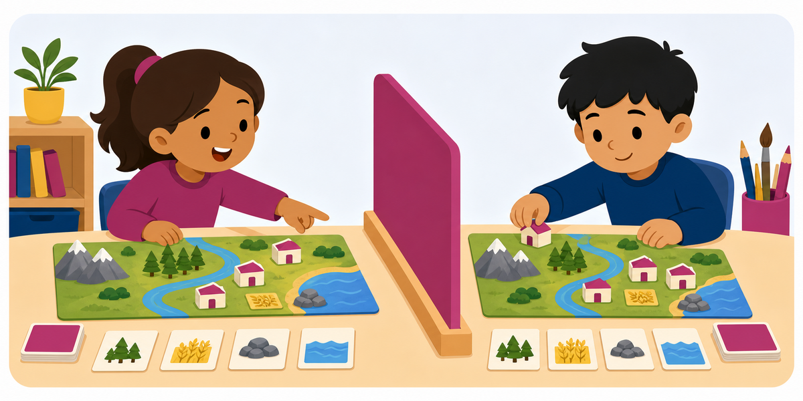

Activity 88 ·
Settlement Planner

Materials Landscape mats and building or resource cards.
What to describe
The Describer conveys a site plan under constraints — space, resources, and rules — so the Builder lays out the same engineered design.
Roles
How a round works
Make it harder or easier
Harder
Go one-way — ban questions — and add a 30-word limit; require measured lengths and units.
Easier
Allow yes/no questions, agree on a shared base piece, and let the Builder peek once before the barrier goes up.
Reflect
Skills
Standards & alignment
TEKS 2021 Science TEKS · Strand 1: Scientific & Engineering Practices — engineering design & communicating information (confirm grade code)
NGSS NGSS SEP-8: Obtaining, Evaluating & Communicating Information · SEP-6: Constructing Explanations & Designing Solutions (ETS1)